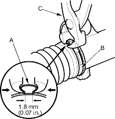
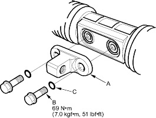
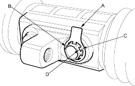
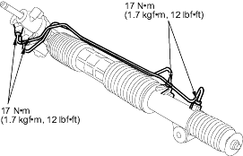

- Close the ear portion (A) of the band (B) with a commercially available pincers, Oetiker 1098 or equivalent (C).

- Slide the rack right and left to be certain that the boots are not deformed or twisted.
- Before installing the bracket (A), clean the mating surface of the 12 mm flange bolts (B) and bracket. Then install the new O-rings (C) on the 12 mm flange bolts.

- Install the bracket on the steering rack with 12 mm flange bolts.
- After tightening the 12 mm flange bolts, install the lock washer (A) over one of bolt the heads (B). Be sure the tabs (C) of the lock washer with the flat surfaces (D) of the bolt head.

- Install the cylinder lines.
Note these items during reassembly:
- Thoroughly clean the joints of the cylinder lines. The joints must be free of foreign material.
- Install the cylinder lines by tightening the flare nuts by hand first, then tighten the flare nuts to the specified torque.
